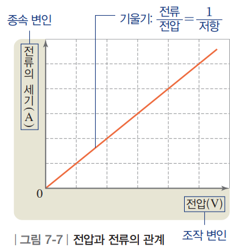

옴의 법칙 발견부터 마법의 차세대 반도체까지 🚀
음향 효과가 포함되어 있습니다.
중학 과학 2 - 7.2단원 핵심 개념 및 가상 실험
개념 설명 속 점선 빈칸을 클릭해 핵심 단어를 확인하고 전기 회로의 3요소를 익혀보세요!
전기 회로에서 전류를 계속 흐르게 하는 능력(원인)입니다. 단위는 \(\text{V}\)(볼트)를 씁니다.
전하(전자)의 흐름 자체를 말합니다. 전류의 세기는 단위 시간당 이동한 전하량으로 \(\text{A}\)(암페어)를 씁니다.
전류의 흐름을 방해하는 정도입니다. 원자와 전자의 충돌 때문에 생기며 단위는 \(\Omega\)(옴)을 씁니다.
전압을 1.5V로 고정하고, 니크롬선의 길이(저항)를 바꿔가며 전류를 측정해봅시다.
❓ 관찰 결과: 저항이 큰 (긴) 니크롬선을 연결했을 때 전류계의 바늘과 수치는 어떻게 되었나요?
스위치를 켜고 슬라이더로 전압을 올린 후, 우측 그래프에서 측정된 값의 알맞은 교차점을 스스로 찾아 클릭해보세요!
현재 측정된 값을 그래프 교차점에 클릭해보세요.
[해석 1] 저항이 커질수록 전류의 세기는 어떻게 되었나요? (실험 1)
[해석 2] 그려진 그래프 모양을 볼 때, 전압과 전류의 관계는 어떠한가요? (실험 2)
[최종 정리] 위 결과를 종합하면, 전기 회로에 흐르는 전류의 세기는...
[전압과 전류] 저항이 일정할 때, 전압이 2배, 3배, 4배 커지면 전류의 세기도 2배, 3배, 4배 커집니다. 즉, 전류의 세기는 전압에 비례합니다.
[저항과 전류] 전압이 일정할 때, 저항이 2배, 3배, 4배 커지면 전류의 세기는 1/2배, 1/3배, 1/4배로 작아집니다. 즉, 전류의 세기는 저항에 반비례합니다.
이처럼 전류의 세기는 전압에 비례하고 저항에 반비례하는 관계를 옴의 법칙이라고 합니다.
전류(I), 전압(V), 저항(R)의 관계식

▲ 전압과 전류의 비례 관계를 보여주는 그래프
모든 물질은 원자와 전자의 충돌로 인한 저항을 가지고 있지만, 그 크기에 따라 세 가지로 나눌 수 있습니다.
과학사 & 미시적 관점의 옴의 법칙 탐구 🔍
전기장 \(\mathbf{E}\)를 걸어주었을 때 물질 속 자유 전자들이 얼마나 잘 흘러가는지(\(\mathbf{J}\))를 측정합니다.
🔬 옴의 진짜 목적: "물질의 고유한 전기 성질 측정"
1827년 게오르크 옴이 이 법칙을 탐구했을 때의 진짜 목적은 회로 계산이 아니라, "물질마다 전기를 얼마나 잘 통하게 하는가?"라는 물질 고유의 특성을 밝히는 것이었어요.
$$\mathbf{J} = \sigma \mathbf{E}$$
• \(\mathbf{J}\): 전류밀도 (단위 면적당 흐르는 전류)
• \(\mathbf{E}\): 전기장 (전자를 밀어주는 전기적 힘)
• \(\sigma\) (시그마): 전기전도율 (물질이 전기를 얼마나 잘 흘려보내는지 나타내는 고유한 상숫값)
🏭 첨단 산업에서 쓰이는 대표적 금속들
과학자들은 이 법칙을 통해 Ag (은), Cu (구리), Au (금) 같은 금속들의 전기전도율(\(\sigma\))이 매우 높다는 사실을 알아냈습니다.
💡 그런데 왜 회로에서는 \(I = \frac{V}{R}\)로 바꿔 쓸까요?
전선의 복잡한 두께나 길이를 매번 계산하며 회로를 만드는 것은 너무 복잡하기 때문이에요! 그래서 '전류가 얼마나 잘 흐르는지(\(\sigma\))'를 거꾸로 뒤집어 **'전류가 흐르는 것을 방해하는 정도(\(R\), 저항)'**로 개념을 전환하였고, 중학교에서 배우는 간단한 \(I = \frac{V}{R}\) 공식이 완성되었답니다!
교과서 활동 및 사고력 문제의 빈칸을 채워보세요!
회로에 연결했을 때 전류가 흐르는 연필심(흑연), 철, 구리 등은 저항이 작아 라 부르고, 전류가 거의 흐르지 않는 고무나 플라스틱은 저항이 매우 커서 절연체라 부른다.
전기 회로에 흐르는 전류의 세기는 전압에 하고, 저항에 한다.
스피커의 소리를 크게 하려면 스피커에 흐르는 전류의 세기가 증가해야 한다. 따라서 전압이 일정할 때, 스피커 내부의 저항을 조절해야 소리가 커진다.
저항과 반도체의 원리가 어떻게 미래 세상을 바꾸고 있을까요?
교과서에 나오는 기본 규소(실리콘) 반도체를 넘어, 세상을 바꾸고 있는 최첨단 신소재들을 눈높이에 맞춘 비유와 애니메이션으로 알아봅시다! (카드를 클릭해보세요)
질화갈륨&비소화갈륨
"전자가 달리는 초고속 고속도로!"
열 안나는 초소형 충전기와 5G 통신.
이텔루륨화텅스텐
"가장자리로만 달리는 마법의 판!"
양자 컴퓨터와 초저전력 메모리.
이리듐산스트론튬
"서로 눈치 보느라 굳어버린 청개구리!"
빛을 주면 도체로 변하는 AI 신경망 칩.
텔루륨화카드뮴&텔루륨화수은
"빛을 낚아채는 밤의 스나이퍼!"
적외선 센서와 양자 스핀 홀 효과.
활성화된 원소를 클릭해 궤도 모형과 첨단물리학에서의 쓰임새를 알아보세요!
단순히 옴의 법칙을 외우는 것을 넘어, 이러한 저항의 성질을 자유자재로 다루고 통제하는 기술이 바로 현대 반도체 과학의 핵심입니다. 여러분이 바로 이 마법 같은 기술을 발전시킬 미래의 과학자입니다! 👨🔬👩🔬
Bohr Model Representation